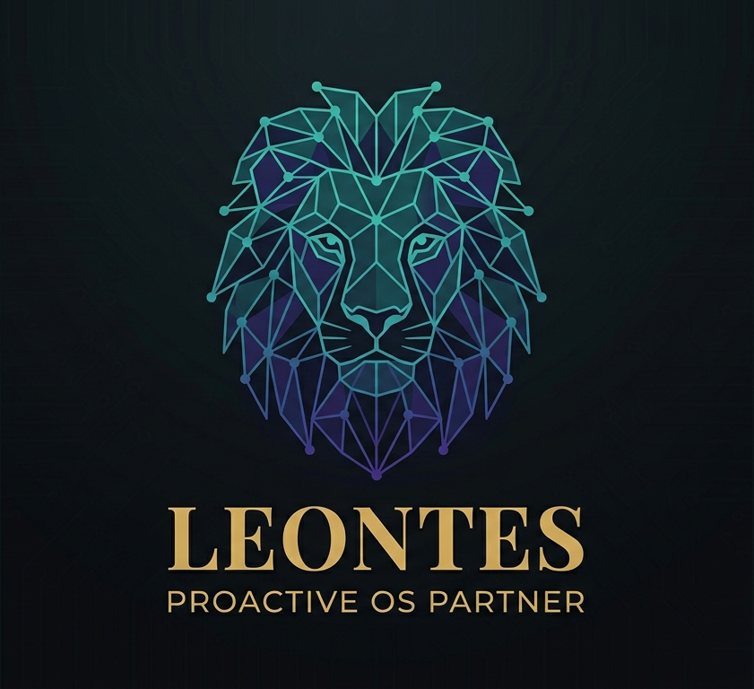

An AI agent that lives in your OS, acts before you ask, and writes its own tools. Self-hosted. Open source. Windows.
Core modules
Leontes is built around a set of modules that work together — not a collection of disconnected features bolted on top of an LLM.
Sentinel
Watches your file system, clipboard, calendar, and active window. Triggers suggestions or actions without you asking. It notices before you do.
Structural Vision
Reads application UI via Windows UI Automation — no screenshots, no pixel matching. Sees buttons and fields as structured code, not images.
Synapse Graph
A knowledge graph linking people, files, and projects. "Send this to the lead dev" resolves the person from your Git and email history.
Tool Forge
When the agent hits a capability gap, it writes a new tool class, compiles it, runs a test, and asks you to approve. Nothing runs without your sign-off.
CLI + Signal
Talk to it from your terminal or message it from your phone via Signal (E2E encrypted). Same context, same memory, same agent.
Core modules are being built. No release yet — but the architecture is solid, the scope is locked, and the code is public. Star the repo to follow along.